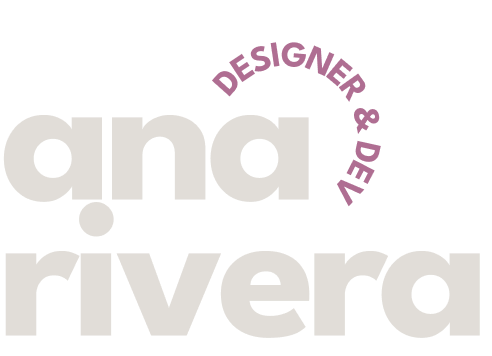
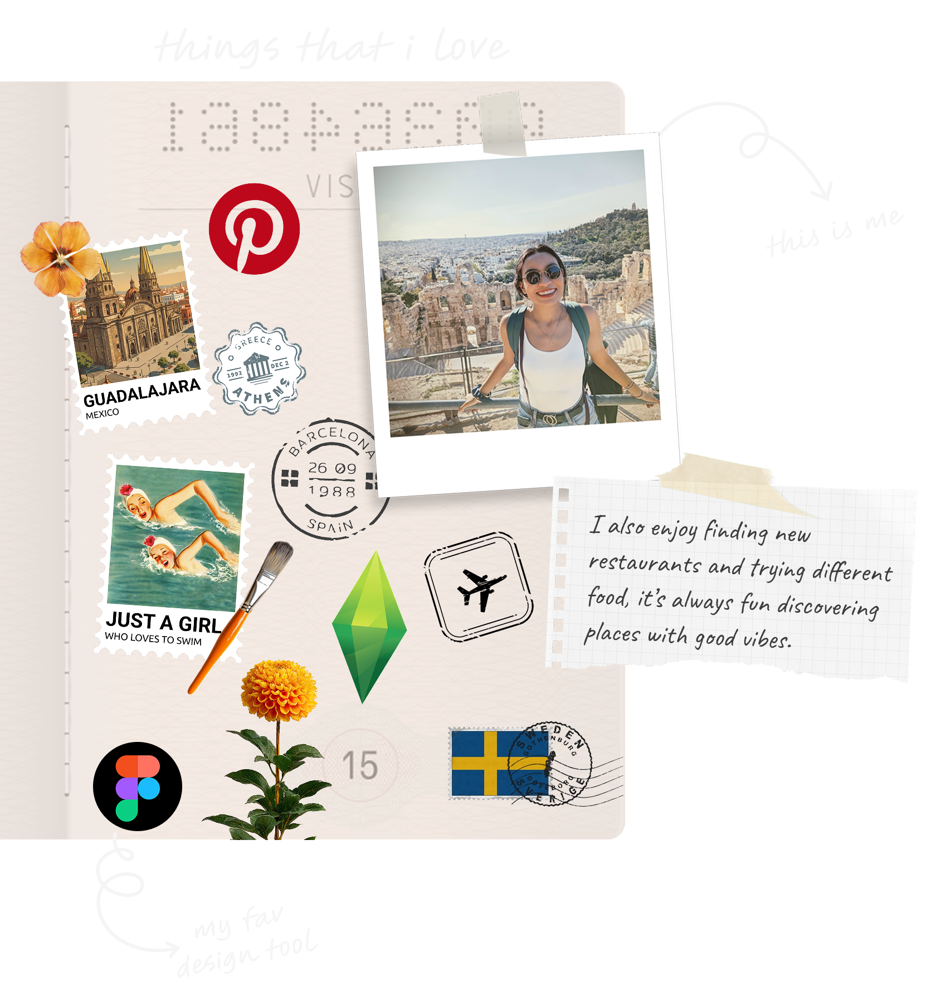

Tools
Tech stack
Here you can see the list of technologies and tools that I commonly use for development and design.

Designer by craft
Developer by practice
Problem-solver by nature

I ship products end-to-end. Designer and full-stack developer who takes projects from concept to production.
What I actually do: Design user experiences, write the code, build the backend infrastructure, deploy to production.
One person who speaks both design and engineering means fewer meetings, clearer decisions, and products that look and work exactly like they were meant to. I'm currently experimenting with AI tools to speed up the repetitive parts of design and development, and I'm still figuring out what works and what's just hype.
Outside of work, you’ll find me swimming, reading, watching films, crafting, or trying (and maybe failing) to keep my plants alive ✨🪴.
Here you can see the list of technologies and tools that I commonly use for development and design.
Selected work, told as stories. Each one taught me something about people, problems, and the small details that make design feel right.
I've developed her landing page; and I completed her brand identity and social media design system for a personal brand. Visual strategy, content grid design, and cohesive aesthetic across digital platforms.
View case studyEnd-to-end UX and UI design of the onboarding experience for a skills-learning mobile app. User journey mapping, wireframing, and high-fidelity prototyping to reduce drop-off rates.
View Case StudyAdaptation and redesign of the UOC (Universitat Oberta de Catalunya) website into a mobile app experience. Focused on information architecture, accessibility, and creating a seamless academic journey for remote students.
View Case StudyAdaptation and redesign of the UOC (Universitat Oberta de Catalunya) website into a mobile app experience. Focused on information architecture, accessibility, and creating a seamless academic journey for remote students.
View Case StudyDeep research into users, context, and business goals. Interviews, surveys, and competitive analysis to uncover real problems.
Synthesizing findings into clear problem statements, personas, and user journeys that guide every design decision.
From rough sketches to high-fidelity prototypes — iterating quickly, testing early, and refining based on feedback.
Polished handoff with design systems, specifications, and ongoing collaboration with developers to ensure quality execution.
You could have been anywhere on the internet, yet you're here, so many thanks for visiting!
Let's discover if I'm the right fit for your next hire.